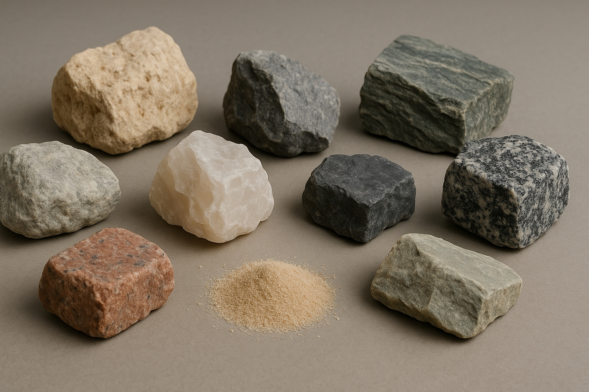
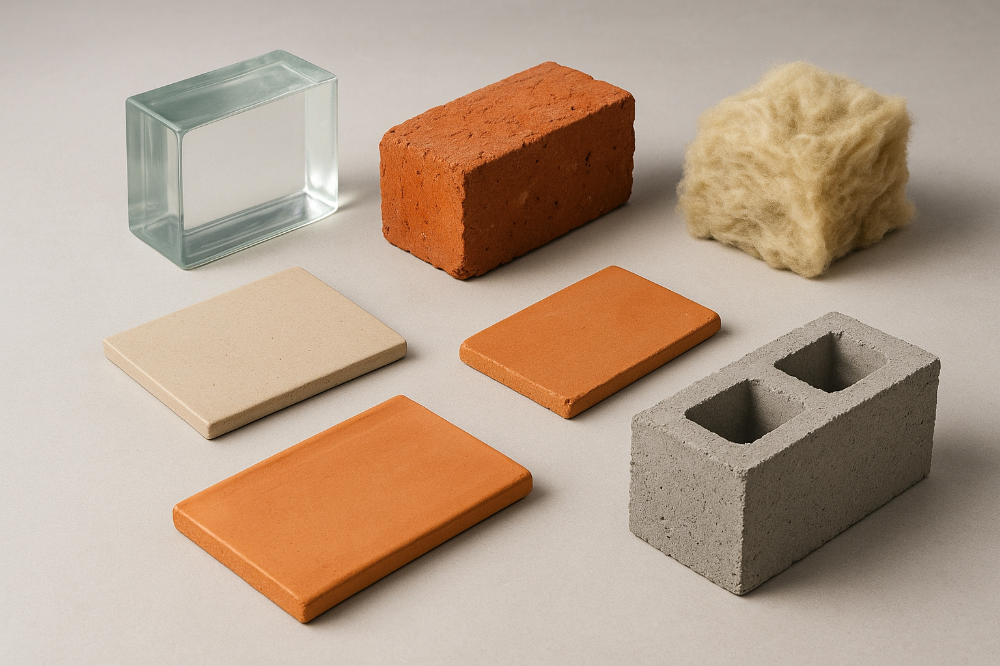

Les matériaux minéraux
Les matériaux organiques
Les matériaux métalliques
Les matériaux composites
Les familles de matériaux
Les matériaux minéraux
Explication :
Les matériaux minéraux proviennent soit directement de roches naturelles, comme la pierre (granit, ardoise, calcaire), la brique ou le sable, soit sont obtenus par transformation à haute température, comme le verre, la céramique, la terre cuite, le béton ou la laine de roche.
Historique :
Les matériaux minéraux sont parmi les plus anciens utilisés par l’être humain. La pierre taillée, l’argile cuite et le verre apparaissent dès la préhistoire ou l’Antiquité. Aujourd’hui, ces matériaux restent essentiels dans les domaines de la construction, de l’architecture et de l’aménagement.

